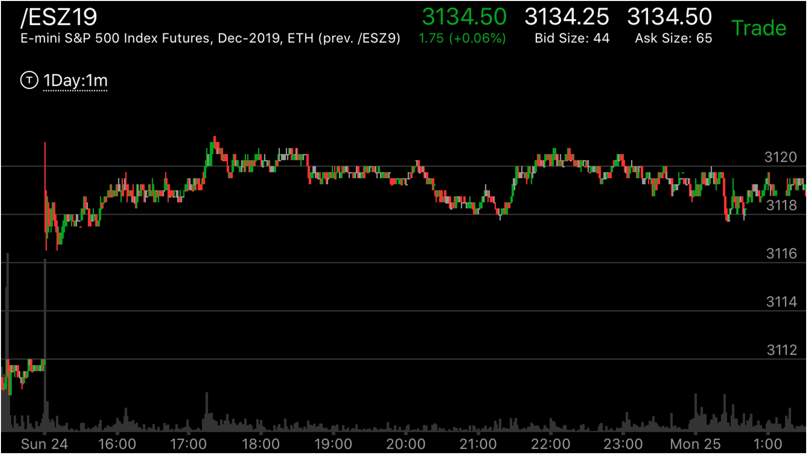
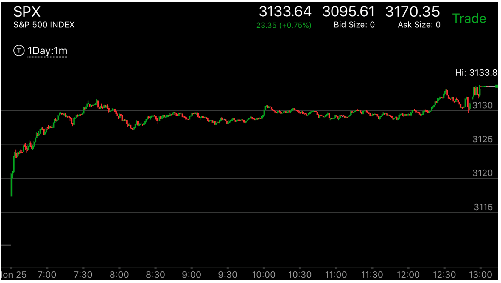

上影线或下影线在ES 的gap当中的应用和其它影响
- 如果ES周日或者3点出现了gap，那么它出现了下影线或上影线，可以想象它的延长线，不要局限于它本身的高度。
- 影线一定要和运动方向相同才有用，不然就没有用处。这个影线可以起到一定的预测作用。
- 一般它一定会到达这个点的。如果快速到达，那么可能回调或者反转，如果慢慢到达，那么要根据别的情况要看是否到头了。
期货开盘后出现了gap，本身出现了上下影线
运动当中出现了上下影线
期货开盘后出现了gap，本身出现了上下影线
TOP


图示:
图一：周日开盘后，出现了大幅上涨，它出现了上影线。这个影线可以想象它从很高的位置下来，不能局限于它本身的样子。这样，它相当于，冲高后，立刻下来。
这样的走势未来一定上涨。它在中间17：00出现了很小的新高，然后缓慢拉回，似乎是一个相对强势，但是考虑到，上影线不能直接用这个点，而且它只是很小的高点。
而且它又走出了一个下跌走势，在20：00停留很久。
图二：开盘后，不断上涨，轻松越过了高点，一天都在上涨。


图示:
图一：盘中大跌，出现了然后大幅反弹。
图二：3点期货开盘后，大幅低开。出现了下影线。这个下影线虽然没有在最低点3092.但是可以想象它从那里开始。这样它就成了一个相对走势。这个走势到了高点后，
走平不到前面的高点。返回原位。成了相对弱势。未来一定会涨。
运动当中出现了上下影线
TOP

图示:开盘第一分钟就出现了强大的第一浪下跌。然后反弹后，继续加速下跌。但是幅度明显低于开始，这样这个就不是要涨的走势。
但是由于它加速了，所以它要填补真空。这个非常的tricky。它的第一次上涨，6：38，幅度很大。然后回到原位，6：50再次上涨，幅度很小。按照相对论，它应该会超过前面的高点。
这时出现了上影线。7：15出现了第一个上影线，它拉回后，再次缓慢上涨，说明会超过它。7：30出现第二个上影线，拉回后，7：35，它快速冲高，这样超过了上影线的高点。这样就到达了顶部。
因为这个是填补真空。所以一定会反转的。只是在于真空要填补到哪里。这时上影线可以提供一个预测。可以预先在上影线上面一点放一个单子，如果慢慢来。那么就取消单子。如果
很快上涨，那么就执行这个单子。